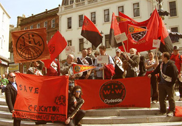

Submitted on Fri, 09/14/2007 - 2:33pm
By Nick Durie (Central Scotland Organiser, IWW)
This is a personal response to the victory in the Save Crichton Campus campaign and does not necessarily reflect the whole views of the IWW, or those of all the participants in the campaign. It is however intended as a contribution to the debate within the IWW, and the role of the organisation in the wider class struggle. I believe this campaign shows that a small radical union can have a big catalysing effect, and that that effect is most felt when it is used with other organisations to bring together industrial and community based organisational capacity, which would otherwise have been fractured. I believe if the IWW is to play this role, it will also grow quickly as people see the benefit of it.
The aim of this short contribution is to demonstrate that the IWW will grow at the fastest rate and have the most positive effect on the wider class struggle where it works with the mainstream trade unions, using their organisational capacity, acting as a rank and file network or base union within them and providing the kind of catalytic effects required or making the interlocations necessary to utilise and link up with the mass organisations of our local communities and neighbourhoods to aid workplace struggles.
Background to the campaign
Local context
From various leaflets and articles published during the campaign:-
"We need your support! On Wednesday 17th January at 6pm, the Principal of Glasgow University (GU) announced that he would be closing down the GU part of the Crichton Campus in Dumfries in South West Scotland. The Crichton Campus is based in Dumfries. It opened less than ten years ago, to provide Higher Education opportunities for a region which, until then, had no Higher Education institution. This caused demographic, cultural, economic and social problems for the area as large numbers of young people left the area for HE not to return. Also because of lack of provision, Dumfries and Galloway had a far lower than the national average of uptake of Higher education. It was a great boost to the region to see the Crichton Campus based here." [IWW / University Student Socialist Society, Campaign Leaflet]
"Students, staff and many thousands of local people have protested at this decision, recognising the importance of the UGCC to the region as the only provider of many educational opportunities. UGCC plays an important role in halting the demographic decline as previously young people leave the region for HE opportunities and did not return (whilst few were attracted in). It also boosts the local economy by several millions of pounds through its research activities, hosting of conferences and provision of employment. It also hosts a range of social and cultural events for the region including public meetings, poetry workshops, gigs, comedy nights, theatrical productions as well as general educational activities." [IWW / Staff Letter to Community Councils]
“The Crichton was first choice for me out of a number of options to study for a variety of reasons [... T]he Crichton has given me a wonderful opportunity which I doubt I would have been able to have in a city university so would love to see it succeed.” [Corinna Martin, single parent - from personal testimonials leaflet]
"The Crichton University Campus was key to regeneration and gave hope to Dumfries and the south of Scotland. Universities breed research. and research breeds development, and these in turn produce wealth and economic growth - exactly what the south of Scotland urgently needs. This is Scotland’s forgotten region. While governments and the EU pour millions into the central belt as a reward for failure and throw more millions at Gaeldom, the south receives almost nothing. Want a billion for a bridge to Edinburgh? No problem. Want £800,000 to keep a dream alive in the faraway south? Tough. I don’t know who is to blame for this scandal. But I do know this: before I retired as Scottish political editor of The Herald I went with Jack McConnell to Kirkcudbrightshire in the wake of the awful foot-and-mouth devastation in that area. I know Jack and I know he was genuinely concerned at the difficulties facing Dumfries and Galloway and at local resentment over the pull of the central belt. On that trip he told me he wanted “to do something” for the south-west of Scotland. I may have missed his big announcement, but I don’t think so. But if ever he had the chance to keep his word it is now." [Murray Ritchie, Main comment in Herald newspaper, 20th February]
What victory in the campaign means
This campaign was a serious issue for the media and civic society in Dumfries and Galloway. It had ramifications across the central belt as well with political commentators and national media taking an interest. The victory in this campaign has far more effect than the simple £1.5 million funding which was won from the government. The IWW, because of its involvement, stands to gain a lot of credit from the campaign, and the degree to which community and workplace civic society worked together is testament to the organisational capacity that such interlinkages can grant to popular causes. There is much to be learned from this in terms of future practice, and to this end that is what is aimed at with this short personal writeup.
Timescale for the campaign
The campaign started in February, after it became clear that the campus was to be axed by the university authorities at the end of January. Initially Glasgow University plans seemed to indicate that redundancies would start to kick-in in April.
Wobbly UCU members - who were involved in that campaign from the start - were able to forestall that, and ensure that proper redundancy procedures were followed to the letter, however it was clear that the University authorities were keen to act quickly to close the campus. This was perhaps due to the uncertainty of the (then) forthcoming election, where polls predicted an SNP victory was possible.
In February parties of students went through to Edinburgh on several occasions to lobby both the Parliament and the Scottish Funding Council. Around the same time a letter writing campaign was gotten underway, with people being urged to write to all three relevant institutions (The Scottish Executive, Glasgow University, and the Scottish Funding Council). The issue too had been raised in First Minister's Questions in Parliament, with the then First Minister Jack McConnell stating (after a question from a Tory MSP), "I believe the overall level of provision at the Crichton campus should be at least maintained - if not improved." The government however did not act decisively, as it could have done, and disclaimed any responsibility.
During February Crichton students, a local Dumfries based newspaper, and students based at Paisley University gathered about 7,500 names on three separate petitions. These were presented to the authorities. The local press in Dumfries and Galloway covered the issue intensely.
There were a number of student protests throughout February and March, and this was the point at which the student socialist group at Glasgow University was most active on the issue. Glasgow University's main campus was covered in flyposters and graffiti and the issue became very visible. Dumfries town centre too received some flyposting and stickers. The issue became highly visible in lots of ways.
When the election campaign got seriously underway the IWW co-ordinated two phone lobbies. The second phone lobby was international in reach, with callouts going to the US IWW, FESAL-E and a variety of other places, and instructions given to call the University, but also to email and fax various politicians. By this stage University authorities must have calculated that student protests would have died down (as indeed they had, at the main campus, to some extent), but they had not considered that the issue would become of some notable international significance. The IWW strategy [IWW Crichton Campaign Continues... and Deepens] had begun to take shape.
The fact that the issue refused to die turned the campaign from something that had needed "a miracle" in February (according to one Tory MSP) into a running election issue. Although local Labour politician Elaine Murray had been supportive of the campaign, and the Tories also seemed to back it, the Scottish Executive, despite warm noises, had made no significant progress in changing the course of matters. The SNP - up in the polls - seized upon this and made it an election promise to save the campus.
Through the UCU IWW members made the fight to save the campus a national union issue. The UCU then undertook to publicise it during the election. Previously, before these efforts were exerted, the UCU had not been proactive in campaigning to save the campus.
Senior politicians were also lobbied at the University itself during a hustings intended for the 'business community' by members of the campaign. In front of the Principal of the University a number of politicians across several parties made their disquiet at the closure clear.
Following the election of the SNP as the new Executive the campaign began lobbying the new ministers. There were good connections between staff and the SNP, due to former pupils and the political affiliations of some. Following the election there was an announcement of a review of the 'academic strategy' ot be undertaken by the Scottish Funding Council. Initially however the SNP did not make good their election promises, and discussions with SNP ministers made it clear that they would only do so with a fair bit of pressure. It became clear that the campaign needed to exert this. Plans were set in motion for a high profile public meeting, and civil society groups across Dumfries and Galloway were invited to send motions endorsing the continuation of Glasgow University educational provision of at the campus, seeking government intervention. It's estimated that around a dozen separate community councils, one tenants association, and a community health clinic got involved at this stage, and the campaign was beginning to broaden out to civil society groups of this nature when the government took the decision to act.
Events of the campaign
The campaign was initially punctuated by student led demonstrations in Dumfries and Edinburgh, and later at Glasgow University. These demonstrations received good media coverage. As the campaign wore on visibility was maintained by other forms of protest in increasingly innovative ways. The IWW produced a variety of stickers and leaflets, a workplace bulletin for Glasgow University staff was produced. During the election the IWW intervened in a high profile Glasgow University sponsored hustings intended for the business community. During the graduation ceremony and at other events where Sir Muir Russell attended Crichton the campaign was made highly visible. A number of high profile lectures and events at Glasgow University too were fliered to increase our visibility. After the election students marched to Glasgow from Dumfries generating a lot of favourable press attention. The IWW began co-ordinating for a high profile public meeting and attended the federal meeting of South Nithsdale Federation of Community Councils. Following the election there was also a number of meetings with the government and campaign representatives.
Who was in charge
Nominally all power lay with Sir Muir Russell, Principal of Glasgow University, to rescind the decision to close the campus. The University had the spare funds to avoid closure. The SFC did not even need to be involved. The Government claimed it was nothing to do with them. In the end however the campus was saved through direct Government intervention. Power over the situation was diffuse but pressure was most easily exerted on inexperienced politicians interested in vote buying, than on unaccountable, unelected career bureaucrats.
What forced their hand
The campaign had a lot of local backing in Dumfries. Friendly media made it very visible. The nature of the campaign and the fortunate timing of the election also allowed the campaign to pressurise politicians much more readily than if it had taken place at another time period. The election of a series of inexperienced politicians into high office also meant that popular causes received more of a hearing. There was also good political links between the SNP and some of those involved with the campaign. After the election the SNP appeared to need pushing in order to act. The addition of a number of community councils declaring their support for the campus at this pivotal time when the campaign was in talks with the Government, and of the continuing IWW activity was probably what shifted the Exec. to act
Which actors had the greatest impact
Dumfries based students and staff kept the issue alive. If local students had rolled over at an early stage there would not have been a campaign. Those who were directly affected carried out a number of high profile activities and made sure that there was a vibrant local campaign. However the addition of international support co-ordinated by the IWW, of local civil society support co-ordinated by the IWW, as well as Glasgow based student socialist organisation, and of a continuing thorn in the side of the university authorities and the government in the form of the IWW was surely an important factor. The University authorities made it clear at several stages that they did not expect any campaign to continue to exist past march. With the help of staff and student solidarity at Crichton campus and the IWW, which refused to accept defeat when the other unions rolled over, the campaign was, if anything, gathering momentum in July and August and internal communications amongst the IWW bear witness to this.
Lessons Learned
members who were also wobblies. That meant that when At the beginning of the campaign the UCU union, which represents lecturers, informed staff that they would sit in on redundancy negotiations and that they would pay for staff to lobby MPs. Essentially however UCU considered the fight lost before it had even began. This had a profound negative impact on staff morale. It was a fight to get UCU to do things. However UCU was able to ensure that full redundancy protocols were followed. The IWW too was able to exert influence on the UCU, through rank and file UCU membership and UCUUCU were rolling over and the IWW was able to say "No, we can win this," UCU was going to be pushed into becoming a more effective vehicle for collective organisation. Staffside some organisational capacity has been built into both the UCU and the IWW through this campaign, which really came from the IWW putting pressure on the UCU. The campaign was able to use the UCU's capacity as a recognised union to be able to force the employer to play by their own rules. It's unlikely as a unrecognised union that the IWW would have been able to do this alone. Likewise the UCU was not going to take the kind of action the IWW found itself able to take. The two organisations then worked better together for staff - each borrowing the other's organisational capacity. That's one of the more profound lessons of the campaign - that real industrial organisation can be built by working simultaneously within and without the mainstream trade unions. Had the campaign taken a more ideologically oppositional stance to our relationship with the UCU, some of the tactical options available to the campaign would have been lost, and I think (given the role of the UCU in ensuring that the campus was not rushed into an early closure before the pivotal election) the campaign itself would not have been able to be successful.
Where do we go from here
There are 5000 staff at Glasgow University. Not all of them are organised. Plans are being set in motion for a wide organising drive on the back of the Crichton victory. Many staff are badly exploited. We believe we can improve the condition of all workers here. There is currently no significant communication between the dozen or so unions and staff bodies present on the campus. At Glasgow University the preamble of the IWW, written all those years ago is especially true as localised struggles allow workers to be continually messed around. We aim to change this. However more than this the victory at Crichton shows that a small radical union can have a large effect. This victory amounts to winning £1.5 million. Many people have said that the IWW is not an organisation capable of achieving victories. We were clearly heavily involved and a major factor in this victory at Crichton. £1.5 million won from the Government is only the begining.
 The last year saw the
IWW and their allies launch a nation-wide campaign to prevent NBS
management from enacting dangerous cuts that will only serve to ease
their own workload. IWW members in the NBS’s recognised unions (Unison
and Unite) have also been at the forefront of the campaign to push the
big unions to act against the plans, rather than seemingly roll over
and let management do whatever they want.
The last year saw the
IWW and their allies launch a nation-wide campaign to prevent NBS
management from enacting dangerous cuts that will only serve to ease
their own workload. IWW members in the NBS’s recognised unions (Unison
and Unite) have also been at the forefront of the campaign to push the
big unions to act against the plans, rather than seemingly roll over
and let management do whatever they want.  January 7th saw the return of MPs to the UK Parliament. It also saw the IWW co-ordinate an international phone blockade. Wobblies chose to celebrate the occasion by sending a message to the Health Minister -Alan Johnson - that cuts to the National Blood Service are notacceptable. Phones were tied up all day as campaigners and supporters from as far afield as Poland, Canada, and the United States, as well as hundreds from around the UK, took part. The IWW in the UK has an active and growing job branch in an NBS processing centre. The action took place ahead of the NHSBT Board meeting on the 10th, where bosses have met to take stock of the management review into their cuts plans.
January 7th saw the return of MPs to the UK Parliament. It also saw the IWW co-ordinate an international phone blockade. Wobblies chose to celebrate the occasion by sending a message to the Health Minister -Alan Johnson - that cuts to the National Blood Service are notacceptable. Phones were tied up all day as campaigners and supporters from as far afield as Poland, Canada, and the United States, as well as hundreds from around the UK, took part. The IWW in the UK has an active and growing job branch in an NBS processing centre. The action took place ahead of the NHSBT Board meeting on the 10th, where bosses have met to take stock of the management review into their cuts plans.
 by IWW National Blood Service - IWW; Sunday, Dec 2 2007, 5:36pm
by IWW National Blood Service - IWW; Sunday, Dec 2 2007, 5:36pm The main industry of Cradley Heath during the industrial revolution was iron working, specifically chain making. In ‘’The White Slaves of England’’ Robert Sherard reminds us that 1,000 tons of chain was made in the Cradley Heath District each week.
The main industry of Cradley Heath during the industrial revolution was iron working, specifically chain making. In ‘’The White Slaves of England’’ Robert Sherard reminds us that 1,000 tons of chain was made in the Cradley Heath District each week.